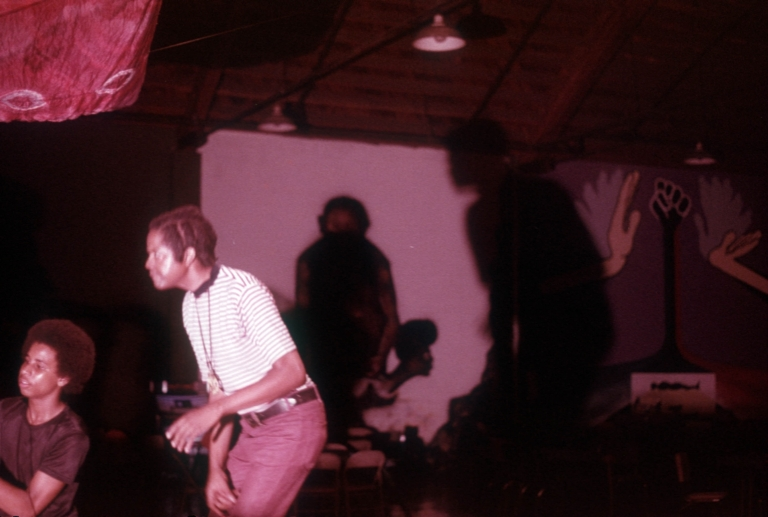
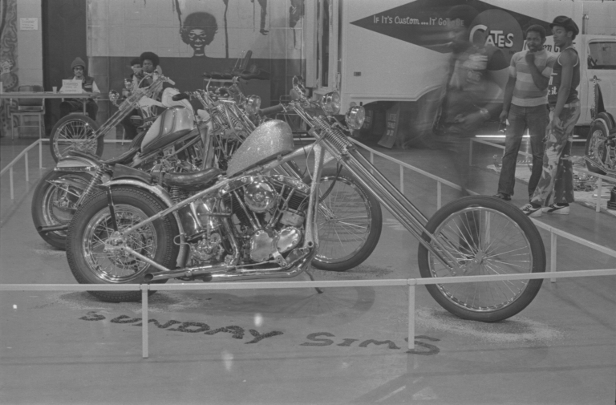

California State University, Los Angeles
Special Collections Archive
AI Guidelines
LIS Org: California State University, Los Angeles: Special Collections Archive
Existing Guidelines: None
Ecological Perspective: Needs guidance for ethical/responsible use
Each idea or section should be in a separate paragraph to make reading easy and organized.
✦ ✦ ✦
Generative AI has the potential to revamp and serve as a catalyst to significantly transform operations and services in information institutions such as libraries, archives, and museums. These technologies are increasingly capable of assisting with a variety of tasks that traditionally require extensive human labor. For example, AI tools can:
Currently, there is no expectation AI will be implemented within the Special Collections Archive (SCA) anytime soon. However, that does not mean that AI will not be considered as a tool in the future. The SCA preserves a wide range of primary research materials related to the history of East Los Angeles, including community histories, oral histories, photographs, and materials related to civil rights movements. Although AI is not currently used, several collections could benefit from AI assisted process:Currently, there is no expectation AI will be implemented within the Special Collections Archive (SCA) anytime soon. However, that does not mean that AI will not be considered as a tool in the future. The SCA preserves a wide range of primary research materials related to the history of East Los Angeles, including community histories, oral histories, photographs, and materials related to civil rights movements. Although AI is not currently used, several collections could benefit from AI assisted process:Currently, there is no expectation AI will be implemented within the Special Collections Archive (SCA) anytime soon. However, that does not mean that AI will not be considered as a tool in the future. The SCA preserves a wide range of primary research materials related to the history of East Los Angeles, including community histories, oral histories, photographs, and materials related to civil rights movements. Although AI is not currently used, several collections could benefit from AI assisted process:

✦ Generate descriptions
✦ Create keywords for cataloging
✦ Process audio visual material
✦ Virtual reference assistant
✦ Automation of metadata for digital collections


✦ ✦ ✦
Continue writing additional content here. You can include more images, links, or any extra context that helps explain the page topic.